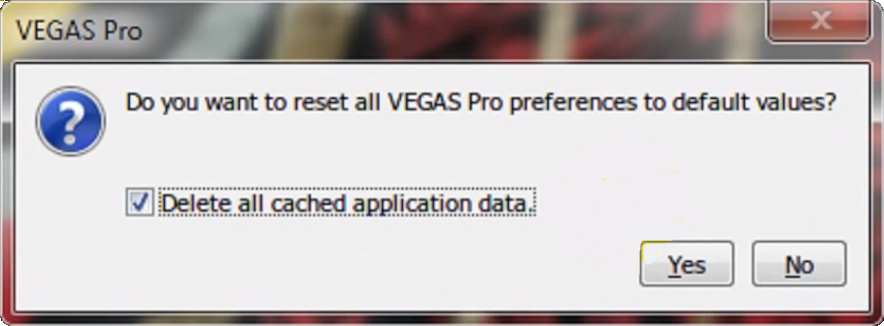
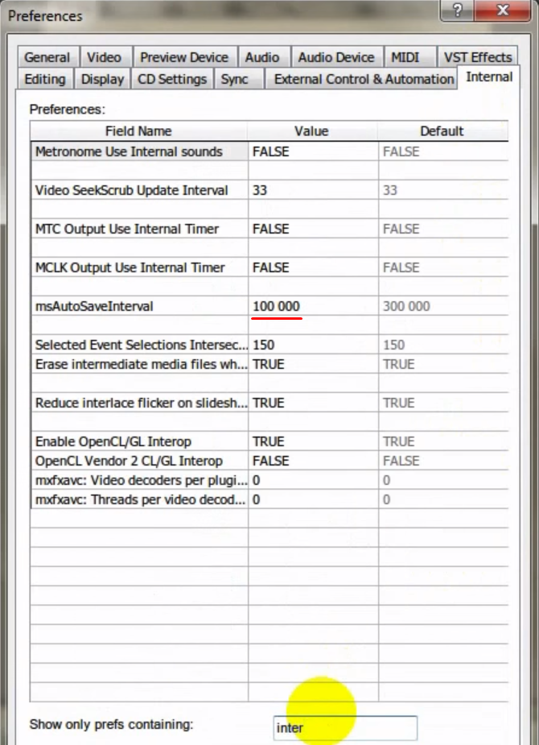

Порой, даже у профессиональных пользователей Sony Vegas Pro возникают вопросы и некоторые сложности
при работе с программой. Сегодня нам бы хотелось ответить на одни из самых популярных из них.
Думаем, материал будет полезен как для новичков, так и для профессионалов своего дела.
Поехали!
1. Баги, ошибки, зависания, выключение программы и т.д. С чем это может быть связано и как это
решить?
Иногда бывает так, что Vegas Pro работал нормально, а потом стал вдруг работать нестабильно, часто
зависать или вообще вылетать во время загрузки. Возможно, после установки каких-то плагинов,
изменения настроек или вообще без видимых причин. Многие в такой ситуации просто удаляют и
переустанавливают программу заново. На самом деле можно вернуть Vegas к исходному состоянию довольно
простым способом.
Перед запуском программы необходимо удерживать нажатыми две кнопки Ctrl (лев) + Shift (лев). Перед
вами появится вот такое окно, где будет необходимо поставить галочку и запустить программу.

Программа будет запущенна с первоначальными настройками и очистит весь лишний кэш. Есть большая
вероятность, что после этого Vegas будет работать стабильно.
2. Случайное удаление фрагмента видео на Тайм-лайне.
Порой возникает следующая проблема. После выполнения какого-то действия в Вегасе, бывает такое, что
при проигрывании видео (режима Play) вы специально или случайно удалили какой-то клип на тайм-лайне.
Интерфейс программы зависает, всё останавливается, хотя где-то фоном идет проигрывание. По
прошествии какого-то времени через несколько секунд/минут программа вылетает с ошибкой. В этом
случае нам поможет следующее решение:
Заходим в корневую папку Sony Vegas Pro, там мы должны найти файл ErrorReportClient.exe.
Далее нам необходимо просто изменить название расширения этого файла. Можете просто дописать
несколько символов. Например, было «.exe» / стало «.__exe».
Таким образом, программе не удастся найти этот файл, и если в следующий раз такой случай повторится,
программа не вылетит с ошибкой. Достаточно будет подождать пару минут для её “отвисания”.
3. Непредсказуемые вылеты программы и как с этим бороться.
К сожалению, временами, чтобы мы не предпринимали, изредка Vegas вылетает. Вне всякого сомнения,
производители программы об этом знают, и поэтому внедрили функцию автоматического сохранения. Думаю,
что почти каждый пользователь Vegas в курсе - функцию автосохрания можно включить в настройках. Но
далеко не все знают, как изменить промежуток времени, через который Vegas сохраняет резервные копии
вашего проекта. По умолчанию Vegas Pro делает сохранение каждые 5 минут, мы бы советовали уменьшить
этот интервал до 2-х. Сделать это можно через скрытые внутренние настройки. Зайдите в Меню Options,
зажмите на клавиатуре клавишу Shift и, удерживая её, выберете пункт Preferences. В открывшемся окне
вы найдете вкладку Internal. Внизу окна, в поле поиска введите слово Interval и у параметра
msAutoSaveInterval и измените значение с 300 000 до 120 000.

Значение можно выбрать любое, главное знать, что 1 мин = 60 000 мс.
4. Плавное ускорение и замедление видео.
Не для кого не секрет, что ускорить или замедлить видео в клипе можно, просто перетаскивая его край
влево или вправо с нажатой клавишой Ctrl. Но многие из пользователей не знаю, о еще одной гибкой
возможности. Щелкнув правой клавишей мыши по видео, перейдите на вкладку Insert/Remove Envelope ->
Velocity (скорость).
На дорожке вашего клипа появится горизонтальная полоска с помощью которой вы сможете регулировать
скорость видео. (Выше – быстрее / Ниже - медленее).
5. Как ускорить рендеринг видео.
При наличии мощной видеокарты существует возможность увеличить скорость рендеринга видео до 1.5 раз.
Для того чтобы это сделать, снова перейдем в меню Preferences (с нажатой клавишей Shift) и также
внизу окна введем слово GPU. Там мы найдем единственную строчку со значением False. Нам необходимо
изменить его на True.
Далее зайдем в меню File -> Render As -> Customize Template и внизу окна функции Encode mode выберем
значение ”Render using GPU if available”.
Будем рады, если вы поделитесь в комментариях своими полезными советами и с радостью сами ответим на
Ваши вопросы. Всем добра, и быстрого рендеринга. :)